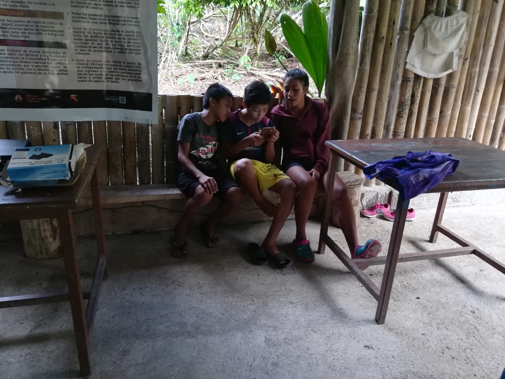
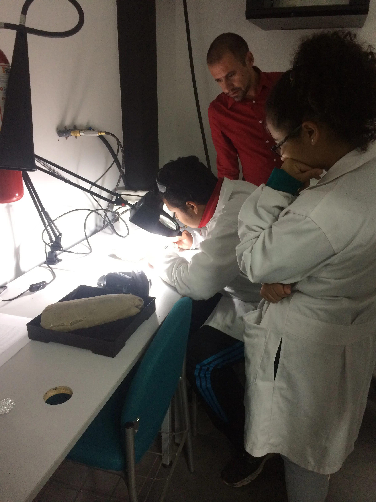
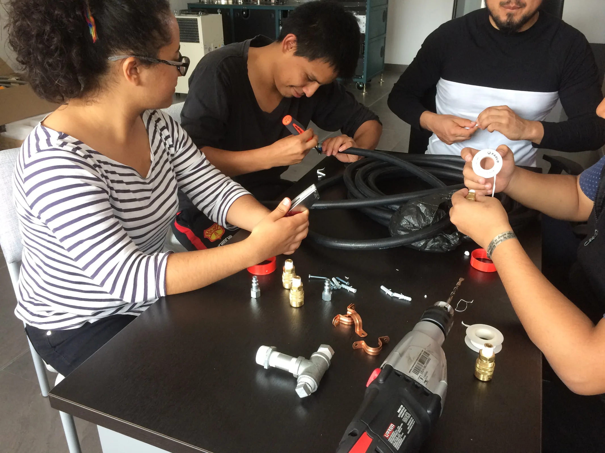

Stay
close.
The next field question may begin with a message. Tell us what you are researching, building, funding, teaching, or imagining.
Good work needs good company.
We welcome conversations with universities, researchers, international organizations, foundations, government institutions, journalists, potential funders, and community partners.
Email the Institute ↗Help a field-tested idea move forward.
Donations help the Rikuna Project continue scientific outreach, community work, and field-based conservation. They also support the wider Garzon Institute network.
Donate through Buy Me a Coffee ↗Research, partner, report, or collaborate.
Write to us about Water-Y pilots, Rikuna fieldwork, Co-Emprende programs, educational initiatives, media requests, or institutional collaboration.
Start a conversation ↗
The work continues in public.
Follow the channels connected to each initiative for field notes, updates, experiments, and community stories.

“Knowledge as power. Communities leading change.”
Garzon InstituteBring the next question.
Our work is built at the intersection of research, education, conservation, and community development. If your work touches one of those edges, there may be a place to meet.
proyectowatery@gmail.com ↗